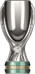
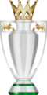
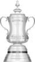

| MUNDIAIS | |||
|---|---|---|---|
| Competição | Títulos | Temporadas | |
| Mundial de Clubes da Fifa | 1 | 2021 | |
| CONTINENTAIS | |||
| Competição | Títulos | Temporadas | |
| Liga dos Campeões da UEFA | 2 | 2011-2012, 2020-2021 | |
| Liga Europa da UEFA | 2 | 2012-2013, 2018-2019 | |
| Liga Conferência da UEFA | 1 | 2024-2025 | |
|  | Supercopa da UEFA | 2 | 1998 e 2021 |
| Recopa Europeia da UEFA | 2 | 1970-1971 e 1997-1998 | |
| NACIONAIS | |||
| Competição | Títulos | Temporadas | |
|  | Campeonato Inglês | 6 | 1954-55, 2004-05, 2005-06, 2009-10, 2014-15 e 2016-17 |
|  | Copa da Inglaterra | 8 | 1969-70, 1996-97, 1999-00, 2006-07, 2008-09, 2009-10, 2011-12 e 2017-18 |
| Copa da Liga Inglesa | 5 | 1964-65, 1997-98, 2004-05, 2006-07 e 2014-15 | |
| Supercopa da Inglaterra | 4 | 1955, 2000, 2005 e 2009 | |
| Campeonato Inglês Segunda Divisão | 2 | 1983-84 e 1988-89 | |
| Copa de Membros Ingleses | 2 | 1985-86 e 1989-90 | |